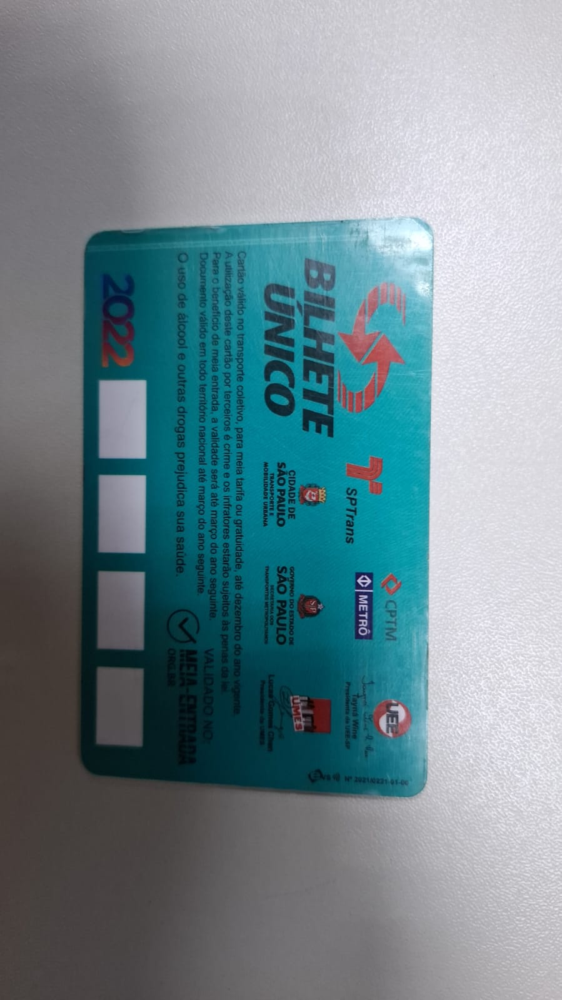
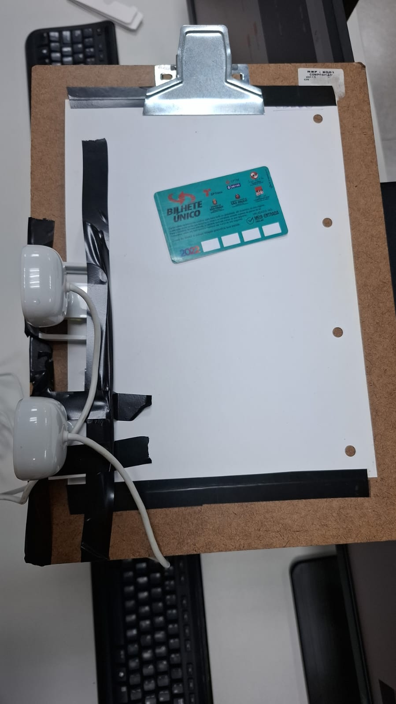
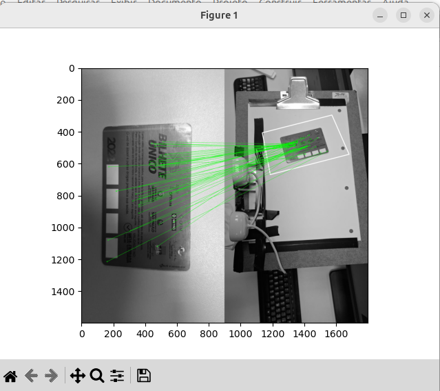
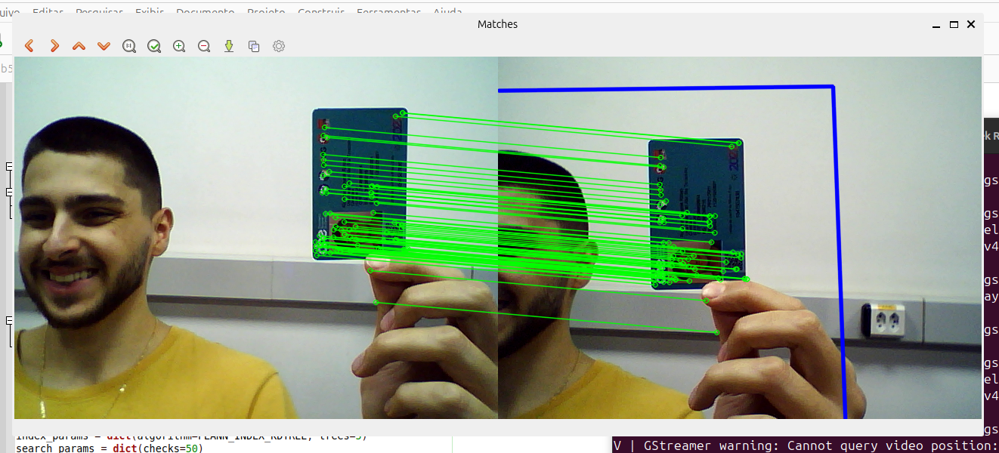
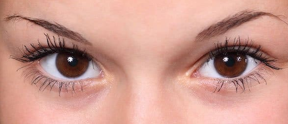
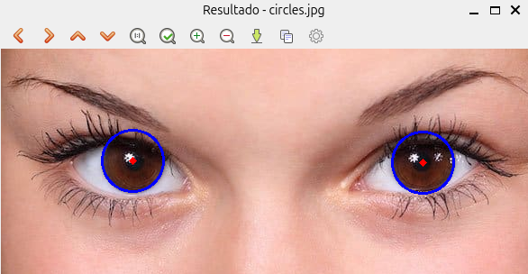
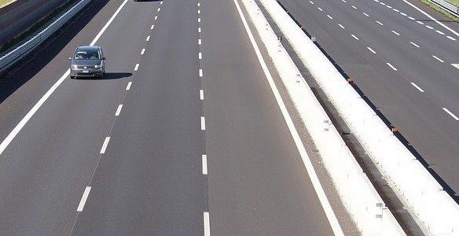
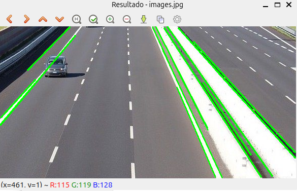
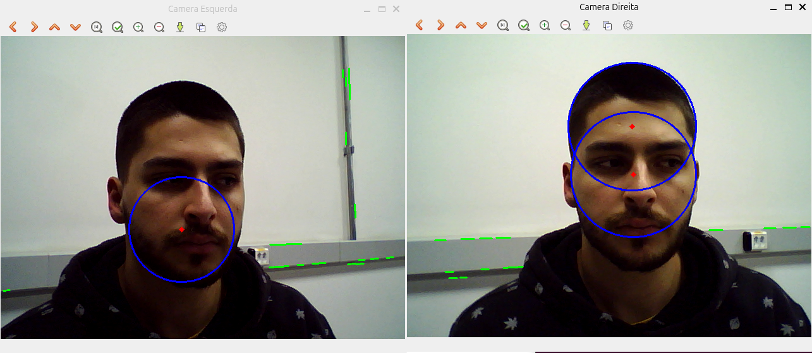

Relatório 5 - Extração de Características - Features
Leonardo Severgnine Maioli - RA: 11201920579
Ricardo Javurek Rihan - RA: 11201920897
Tiago Luiz Silva de Araujo Pereira - RA: 11013316
Laboratório finalizado dia 28 de Julho
Introdução
A extração de características é uma etapa essencial na Visão Computacional, responsável por identificar pontos, regiões ou padrões relevantes em uma imagem, que podem ser utilizados para diversas tarefas como reconhecimento de objetos, rastreamento, reconstrução 3D, entre outras. Esses pontos são conhecidos como "features", e são projetados para serem únicos e consistentes mesmo sob mudanças de escala, rotação ou iluminação.
Neste laboratório, exploramos diferentes abordagens de detecção e descrição de características, com destaque para os detectores Harris e Shi-Tomasi, além do método SIFT (Scale-Invariant Feature Transform), que permite identificar e descrever pontos-chave de forma robusta. Também foi abordada a Transformada de Hough, uma técnica clássica para detecção de formas geométricas como linhas e círculos.
O objetivo das atividades propostas foi tanto o entendimento teórico desses métodos quanto sua aplicação prática utilizando a biblioteca OpenCV em Python. A detecção de correspondências entre imagens e a análise de vídeos ao vivo a partir de uma câmera estéreo previamente calibrada foram algumas das aplicações desenvolvidas para consolidar os conceitos.
Antes da implementação dos experimentos, foram estudados os fundamentos teóricos por meio de tutoriais e materiais oficiais da documentação OpenCV. Inicialmente, foi abordado o conceito de "features", entendendo sua importância na análise de imagens e sua aplicação em sistemas de visão. Em seguida, foram estudados diferentes detectores de pontos de interesse:
Entendendo sobre Features: Introdução aos conceitos de características em imagens e seu papel em tarefas como reconhecimento e rastreamento.
Detector de Harris: Técnica clássica para detecção de cantos, baseada em mudanças de intensidade em diferentes direções.
Detector de Shi-Tomasi: Variação do detector de Harris que melhora a seleção de cantos mais estáveis.
Introdução ao SIFT: Algoritmo robusto para detecção e descrição de pontos-chave invariante à escala e rotação.
Transformada de Hough: Técnica usada para detecção de formas geométricas, como linhas e círculos, em imagens com ruído ou objetos parciais.
Esses estudos forneceram a base conceitual necessária para o desenvolvimento dos experimentos, possibilitando uma compreensão das ferramentas aplicadas nas etapas seguintes.
Parte 2A. Feature Matching com Homografia
Nessa primeira etapa prática, desenvolvemos um script baseado no tutorial da OpenCV disponibilizado em:
Feature Matching + Homography.
O código realiza a detecção de características com SIFT em duas imagens distintas de um mesmo objeto, localizadas em posições e cenas diferentes. Utilizamos correspondência de features e estimativa de homografia para identificar a localização do objeto na cena. O resultado final é uma imagem com as correspondências visuais traçadas.

Imagem 1: Objeto isolado (box.png)

Imagem 2: Objeto em outra cena (box_in_scene.png)

Imagem 3: Correspondência de features detectadas (featureMatching.png)
import numpy as np
import cv2 as cv
from matplotlib import pyplot as plt
MIN_MATCH_COUNT = 10
img1 = cv.imread('box.png', cv.IMREAD_GRAYSCALE) # queryImage
img2 = cv.imread('box_in_scene.png', cv.IMREAD_GRAYSCALE) # trainImage
# Initiate SIFT detector
sift = cv.SIFT_create()
# find the keypoints and descriptors with SIFT
kp1, des1 = sift.detectAndCompute(img1, None)
kp2, des2 = sift.detectAndCompute(img2, None)
FLANN_INDEX_KDTREE = 1
index_params = dict(algorithm=FLANN_INDEX_KDTREE, trees=5)
search_params = dict(checks=50)
flann = cv.FlannBasedMatcher(index_params, search_params)
matches = flann.knnMatch(des1, des2, k=2)
# store all the good matches as per Lowe's ratio test
good = []
for m, n in matches:
if m.distance < 0.7 * n.distance:
good.append(m)
if len(good) > MIN_MATCH_COUNT:
src_pts = np.float32([kp1[m.queryIdx].pt for m in good]).reshape(-1, 1, 2)
dst_pts = np.float32([kp2[m.trainIdx].pt for m in good]).reshape(-1, 1, 2)
M, mask = cv.findHomography(src_pts, dst_pts, cv.RANSAC, 5.0)
matchesMask = mask.ravel().tolist()
h, w = img1.shape
pts = np.float32([[0, 0], [0, h - 1], [w - 1, h - 1], [w - 1, 0]]).reshape(-1, 1, 2)
dst = cv.perspectiveTransform(pts, M)
img2 = cv.polylines(img2, [np.int32(dst)], True, 255, 3, cv.LINE_AA)
else:
print("Not enough matches are found - {}/{}".format(len(good), MIN_MATCH_COUNT))
matchesMask = None
draw_params = dict(matchColor=(0, 255, 0),
singlePointColor=None,
matchesMask=matchesMask,
flags=2)
img3 = cv.drawMatches(img1, kp1, img2, kp2, good, None, **draw_params)
plt.imshow(img3, 'gray'), plt.show()
Parte 2B. Matching ao vivo com webcams
Nessa parte B, adaptamos o código anterior para realizar a detecção de características ao vivo com as duas câmeras da configuração estéreo. O sistema capturava continuamente os quadros de ambas as webcams e realizava a correspondência de features em tempo real, destacando visualmente os pontos correspondentes.
Abaixo apresentamos uma imagem de exemplo obtida durante a execução do sistema, demonstrando o funcionamento da correspondência de características entre os dois vídeos:

Exemplo de correspondência de features entre as duas câmeras (vídeo ao vivo)
import cv2 as cv
import numpy as np
MIN_MATCH_COUNT = 10
cams = []
for i in range(10):
camera = cv.VideoCapture(i)
if camera.isOpened():
cams.append(i)
camera.release()
# Inicia captura das duas câmeras (ajuste os índices conforme necessário)
cap_left = cv.VideoCapture(cams[0])
cap_right = cv.VideoCapture(cams[1])
if not cap_left.isOpened() or not cap_right.isOpened():
print("Erro ao abrir as câmeras")
exit()
sift = cv.SIFT_create()
FLANN_INDEX_KDTREE = 1
index_params = dict(algorithm=FLANN_INDEX_KDTREE, trees=5)
search_params = dict(checks=50)
flann = cv.FlannBasedMatcher(index_params, search_params)
while True:
ret1, frame_left = cap_left.read()
ret2, frame_right = cap_right.read()
if not ret1 or not ret2:
print("Erro ao capturar quadros")
break
gray_left = cv.cvtColor(frame_left, cv.COLOR_BGR2GRAY)
gray_right = cv.cvtColor(frame_right, cv.COLOR_BGR2GRAY)
kp1, des1 = sift.detectAndCompute(gray_left, None)
kp2, des2 = sift.detectAndCompute(gray_right, None)
if des1 is not None and des2 is not None:
matches = flann.knnMatch(des1, des2, k=2)
good = []
for m, n in matches:
if m.distance < 0.7 * n.distance:
good.append(m)
matchesMask = None
if len(good) > MIN_MATCH_COUNT:
src_pts = np.float32([kp1[m.queryIdx].pt for m in good]).reshape(-1, 1, 2)
dst_pts = np.float32([kp2[m.trainIdx].pt for m in good]).reshape(-1, 1, 2)
M, mask = cv.findHomography(src_pts, dst_pts, cv.RANSAC, 5.0)
matchesMask = mask.ravel().tolist()
h, w = gray_left.shape
pts = np.float32([[0, 0], [0, h - 1], [w - 1, h - 1], [w - 1, 0]]).reshape(-1, 1, 2)
dst = cv.perspectiveTransform(pts, M)
frame_right = cv.polylines(frame_right, [np.int32(dst)], True, (255, 0, 0), 3, cv.LINE_AA)
else:
print("Matches insuficientes - {}/{}".format(len(good), MIN_MATCH_COUNT))
draw_params = dict(matchColor=(0, 255, 0),
singlePointColor=None,
matchesMask=matchesMask,
flags=2)
img_matches = cv.drawMatches(frame_left, kp1, frame_right, kp2, good, None, **draw_params)
cv.imshow("Matches", img_matches)
if cv.waitKey(1) & 0xFF == ord('q'):
break
cap_left.release()
cap_right.release()
cv.destroyAllWindows()
Parte 3C. Transformada de Hough em imagens
Nessa próxima etapa do laboratório, implementamos um script baseado no tutorial disponibilizado em:
Hough Transform,
que aplica a Transformada de Hough para detectar linhas e círculos em imagens previamente capturadas. Essa técnica foi essencial para identificação de formas geométricas em cenas controladas.

Imagem 1: Original (para detecção de círculos)

Imagem 2: Círculos detectados (HoughCircle.png)

Imagem 3: Original (para detecção de linhas)

Imagem 4: Linhas detectadas (HoughLines.png)
import cv2
import numpy as np
import glob
# Caminho para as imagens
imagens = glob.glob("*.jpg") # ajuste o caminho conforme necessário
for img_path in imagens:
img = cv2.imread(img_path)
gray = cv2.cvtColor(img, cv2.COLOR_BGR2GRAY)
blurred = cv2.medianBlur(gray, 5)
# Detecção de bordas
edges = cv2.Canny(blurred, 50, 150)
# Detectar linhas com HoughLinesP
linhas = cv2.HoughLinesP(edges, 1, np.pi / 180, threshold=100, minLineLength=50, maxLineGap=10)
if linhas is not None:
for linha in linhas:
x1, y1, x2, y2 = linha[0]
cv2.line(img, (x1, y1), (x2, y2), (0, 255, 0), 2)
# Detectar círculos com HoughCircles
circulos = cv2.HoughCircles(blurred, cv2.HOUGH_GRADIENT, 1, 50,
param1=50, param2=60, minRadius=5, maxRadius=100)
if circulos is not None:
circulos = np.uint16(np.around(circulos))
for c in circulos[0, :]:
cv2.circle(img, (c[0], c[1]), c[2], (255, 0, 0), 2)
cv2.circle(img, (c[0], c[1]), 2, (0, 0, 255), 3)
# Mostrar resultado
cv2.imshow(f"Resultado - {img_path}", img)
cv2.waitKey(0)
cv2.destroyAllWindows()
Parte 3D. Hough ao vivo com webcams
Na sequência, o código anterior foi adaptado para entrada de vídeo ao vivo com as duas webcams da câmera estéreo. O sistema aplicava em tempo real a Transformada de Hough para identificar formas geométricas, como linhas e círculos, sobrepondo essas detecções nos quadros capturados.
A imagem abaixo foi obtida durante a execução do sistema, mostrando a identificação simultânea de círculos e linhas nas imagens capturadas pelas câmeras:

Exemplo de detecção de linhas e círculos ao vivo com câmeras estéreo (HoughCameras.png)
import cv2
import numpy as np
cams = []
for i in range(10):
camera = cv2.VideoCapture(i)
if camera.isOpened():
cams.append(i)
camera.release()
# Inicializar duas webcams (ajuste os índices conforme necessário)
cam_esq = cv2.VideoCapture(cams[0])
cam_dir = cv2.VideoCapture(cams[1])
while True:
ret1, frame1 = cam_esq.read()
ret2, frame2 = cam_dir.read()
if not ret1 or not ret2:
print("Erro ao capturar vídeo")
break
def processar(frame):
gray = cv2.cvtColor(frame, cv2.COLOR_BGR2GRAY)
blurred = cv2.medianBlur(gray, 5)
edges = cv2.Canny(blurred, 50, 150)
# Linhas
linhas = cv2.HoughLinesP(edges, 1, np.pi / 180, 100, 50, 10)
if linhas is not None:
for linha in linhas:
x1, y1, x2, y2 = linha[0]
cv2.line(frame, (x1, y1), (x2, y2), (0, 255, 0), 2)
# Círculos
circulos = cv2.HoughCircles(blurred, cv2.HOUGH_GRADIENT, 1, 40,
param1=50, param2=40, minRadius=70, maxRadius=150)
if circulos is not None:
circulos = np.uint16(np.around(circulos))
for c in circulos[0, :]:
cv2.circle(frame, (c[0], c[1]), c[2], (255, 0, 0), 2)
cv2.circle(frame, (c[0], c[1]), 2, (0, 0, 255), 3)
return frame
# Processar e mostrar
frame1_proc = processar(frame1)
frame2_proc = processar(frame2)
cv2.imshow("Camera Esquerda", frame1_proc)
cv2.imshow("Camera Direita", frame2_proc)
if cv2.waitKey(1) & 0xFF == ord('q'):
break
cam_esq.release()
cam_dir.release()
cv2.destroyAllWindows()
Análise e Discussão
As técnicas estudadas neste laboratório demonstraram grande potencial para aplicações práticas que envolvem análise de imagens em tempo real. A detecção de características com SIFT mostrou-se robusta a variações de escala e rotação, o que é essencial para lidar com diferentes posições das mãos durante a execução dos sinais em Libras. Já a Transformada de Hough foi eficaz na detecção de formas geométricas simples, como linhas e círculos, sendo uma ferramenta útil para auxiliar na identificação da posição e orientação dos dedos ou das palmas das mãos em certos sinais.
No contexto do nosso projeto T1, cujo objetivo é desenvolver um sistema de tradução automática de Libras para texto escrito com foco em ambientes clínicos e hospitalares, essas técnicas serão fundamentais. A identificação precisa de gestos e posições das mãos em vídeos ao vivo requer algoritmos capazes de localizar e descrever regiões de interesse de forma confiável e eficiente. Além disso, a correspondência de features entre frames sucessivos pode ajudar no rastreamento contínuo das mãos durante a execução dos sinais.
Ao integrar essas técnicas com modelos de classificação e redes neurais treinadas para reconhecer sinais específicos da Libras, especialmente aqueles relacionados à triagem e comunicação clínica (como "dor", "febre", "sim", "não", etc.), será possível construir uma aplicação capaz de funcionar com uma simples webcam, oferecendo uma solução acessível e de grande impacto social. A prática com detecção de características e formas durante o laboratório reforça a base técnica necessária para alcançar esse objetivo.
Conclusões
O laboratório permitiu compreender e aplicar técnicas clássicas de visão computacional voltadas à detecção de características e formas, como SIFT e a Transformada de Hough. A prática com vídeos ao vivo reforçou o entendimento sobre os desafios do ambiente real, como variações de iluminação, presença de ruído e movimentação constante.
Esses conhecimentos serão fundamentais para o desenvolvimento do projeto T1, que envolve o reconhecimento de sinais da Libras a partir de vídeo em tempo real. A experiência adquirida com a extração e correspondência de features contribuirá diretamente para a detecção e rastreamento de gestos manuais, etapa essencial para o funcionamento eficaz do sistema de tradução em ambientes clínicos.
Referências
Entendendo sobre Features: Introdução aos conceitos de características em imagens e seu papel em tarefas como reconhecimento e rastreamento.
Detector de Harris: Técnica clássica para detecção de cantos, baseada em mudanças de intensidade em diferentes direções.
Detector de Shi-Tomasi: Variação do detector de Harris que melhora a seleção de cantos mais estáveis.
Introdução ao SIFT: Algoritmo robusto para detecção e descrição de pontos-chave invariante à escala e rotação.
Feature Matching + Homography: Tutorial utilizado como base para detecção de correspondências com SIFT e estimação de homografia entre imagens.
Transformada de Hough: Técnica usada para detecção de formas geométricas, como linhas e círculos, em imagens com ruído ou objetos parciais.